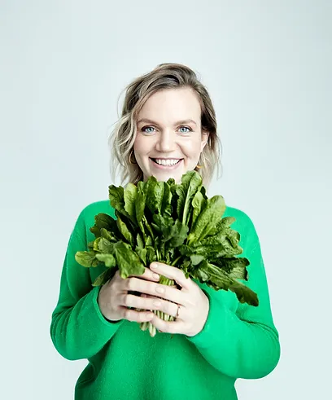

Кто я
Я - Мария Кардакова, зарегистрированный нутрициолог Association for Nutrition, Великобритания, и специалист общественного здравоохранения. Я забочусь о людях, их питании и хорошем самочувствии. В своем блоге я рассказываю о научном подходе к питанию.
Мои книги
Мои лекции
В рамках работы с Россией моя цель - улучшение качества жизни населения с помощью питания, а также предоставление актуальной информации о питании как профессионалам, так и потребителям.